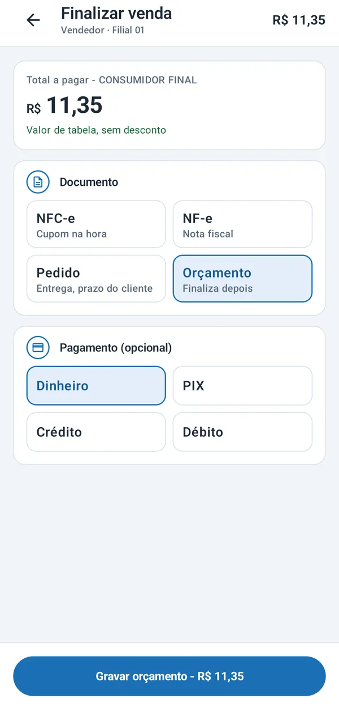

Caixeiro PDV — app Android
Para venda externa e de balcão, no celular do vendedor ou na maquininha SmartPOS. O vendedor escolhe o cliente, monta o carrinho com o catálogo e os preços da filial e finaliza em NFC-e, NF-e, pedido ou orçamento.
- Busca por código ou nome, com o catálogo guardado no aparelho
- Histórico de compras do cliente antes de vender
- Desconto com limite definido por dispositivo
- Cupom por e-mail ou compartilhado pelo celular
